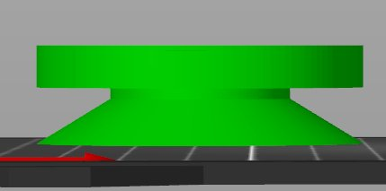
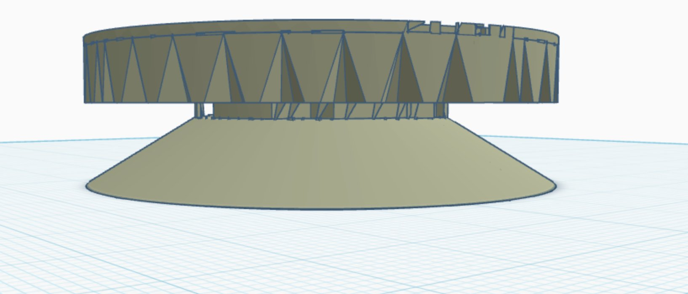
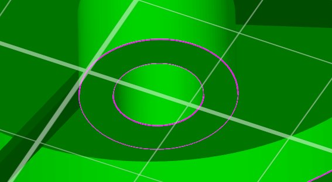

The final design. One monolithic print — pedestal, spring, and cylinder in a single piece. Seven iterations refined the geometry until every element was proportional, printable, and functional.
One piece. No assembly, no hardware. Print 3, place in a triangle under the speaker.
| Outer diameter | 57.9 mm |
| Total height | 24.5 mm |
| Spring arms | 3x BYU radial — 2.0mm wide x 1.52mm thick at 38/158/278 deg |
| Deflection | 0.63mm under 733g |
| Max stress | 45 MPa — PETG yield ~50 MPa |
| Pedestal | 10mm hollow cylinder + 7mm hemisphere dome |
From wide-cone tapered base to clean cylinder-plus-dome. Each screenshot marks a decision point.



| Version | Change | Outcome |
|---|---|---|
| v1_initial | Curved spiral arms | Wrong arm style — not BYU geometry |
| v2_40pct | BYU straight arms at 0.40x | Arms correct, geometry locked |
| v3_straight_pedestal | Hollow straight cylinder pedestal | Taper removed — cleaner |
| v4_spike | Spike tip at base | Wrong — spike too narrow |
| v5_dome | Hemisphere dome on full-width base | Dome too tall — disproportionate |
| FINAL | 7mm dome + 10mm straight cylinder | Correct geometry — clean and printable |
| Scale | OD | Arm w x t | Deflection | Stress | Valid |
|---|---|---|---|---|---|
| 0.20x | 29mm | 1.0x0.76mm | 1.25mm | 181 MPa | over yield |
| 0.35x | 51mm | 1.8x1.33mm | 0.71mm | 59 MPa | marginal |
| 0.40x | 58mm | 2.0x1.52mm | 0.63mm | 45 MPa | sweet spot |
| 0.50x | 72mm | 2.5x1.91mm | 0.50mm | 29 MPa | safe |